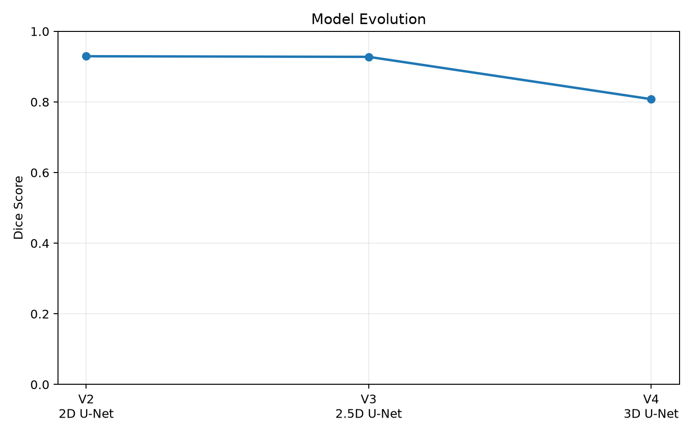
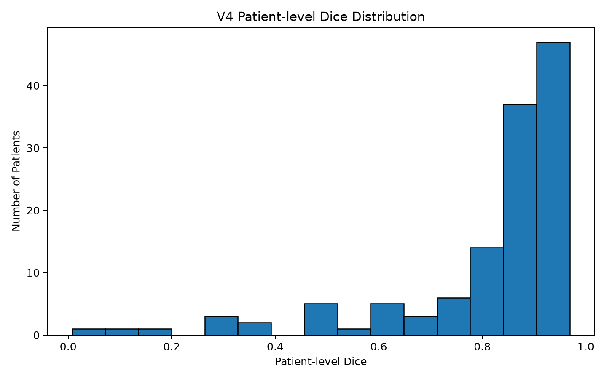
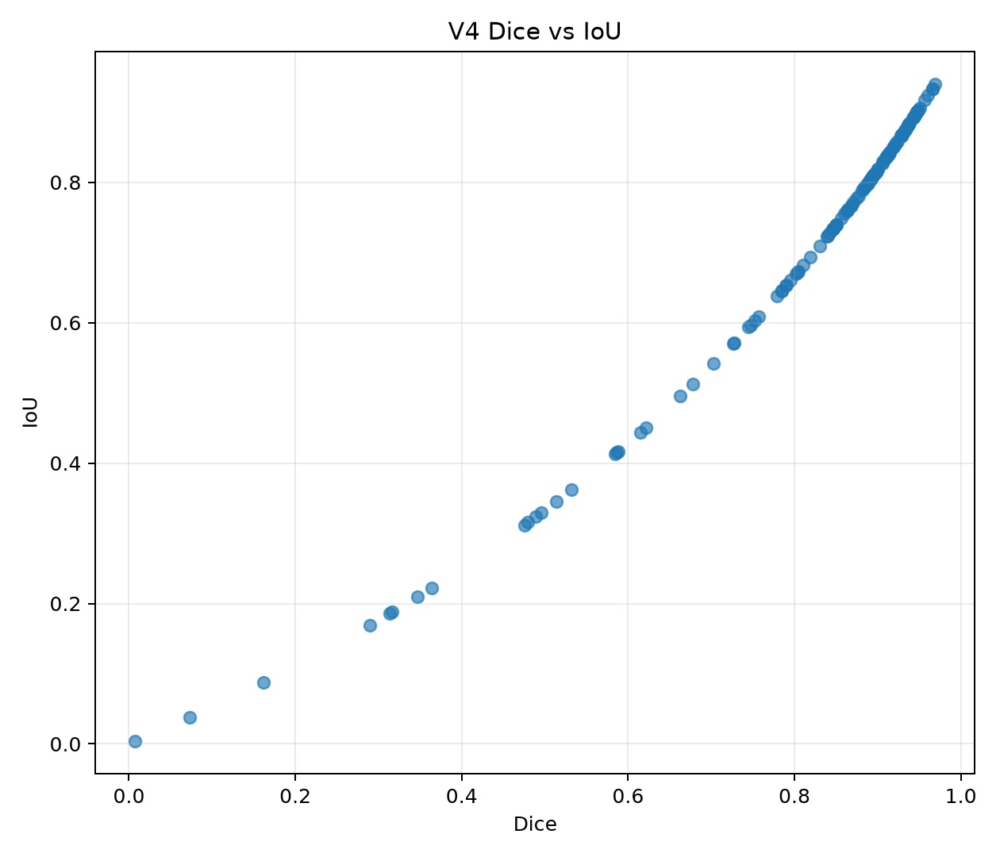
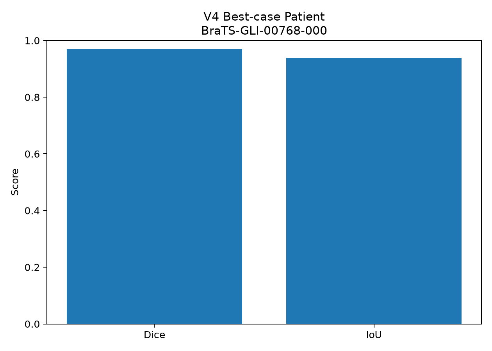
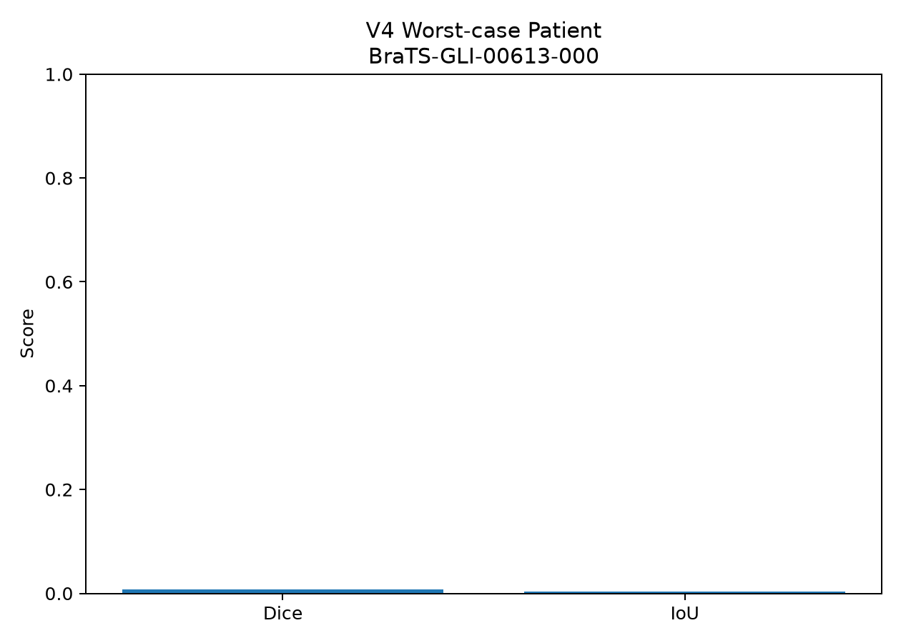

Structural anatomy
Provides anatomical and structural information about the brain.
A deep-learning system for automatically identifying and segmenting tumor regions from multimodal 3D brain MRI. The project evolves from 2D → 2.5D → 3D U-Net architectures to study how increasing spatial context affects volumetric segmentation.
Brain tumor segmentation is the task of locating tumor tissue within an MRI volume and producing a voxel-level segmentation mask.
This project explores the problem through progressively richer spatial representations. It starts with a conventional 2D U-Net, moves to a 2.5D model using neighboring slices, and finally introduces a 3D U-Net that processes volumetric MRI patches.
The final system combines four MRI modalities, tumor-aware sampling, overlapping 3D patch reconstruction, checkpointed training, and patient-level evaluation.
The goal is not simply to maximize a metric, but to understand the engineering challenges involved in building a practical volumetric segmentation pipeline.
V4 uses four complementary MRI modalities as a four-channel input volume. Each modality provides different tissue contrast that helps distinguish tumor regions from surrounding anatomy.
Provides anatomical and structural information about the brain.
Highlights regions with contrast enhancement associated with tumor tissue.
Provides complementary tissue and fluid-sensitive information.
Provides strong contrast for edema and other abnormal regions.
Single-slice segmentation using a conventional encoder-decoder architecture.
0.8240Neighboring slices provide additional depth context while retaining 2D convolutions.
0.8399Four-channel volumetric segmentation with patch-based training and inference.
0.8079Full MRI volumes are too large to process naively on constrained hardware. V4 combines 3D convolutions with patch-based training and overlapping reconstruction.
Instead of treating every region of a large MRI volume equally, V4 uses tumor-aware sampling to increase exposure to informative patches while keeping 3D computation manageable.
V4 is evaluated after reconstructing complete patient volumes. This differs from the slice-level evaluation used by V2 and V3.
Metrics are calculated across individual MRI slices.
Slice Dice / IoUOverlapping predictions are reconstructed into a complete 3D tumor volume before evaluation.
Volumetric Dice / IoUV4 was evaluated on a held-out patient set using volumetric reconstruction and patient-level metrics.




Strong overlap between predicted and ground-truth tumor regions.

Approximately 77k ground-truth tumor voxels versus only 437 predicted voxels at the default threshold — a clear patient-level generalization failure.
A mean score alone hides model behavior. The worst-case investigation showed very low predicted probability across the volume and almost no overlap with tumor-containing slices.
| V2 / 2D | V3 / 2.5D | V4 / 3D | |
|---|---|---|---|
| Spatial context | Single slice | Neighboring slices | 3D volume |
| Input | Slice | Multi-slice | 4-channel MRI |
| Sampling | Slice | Slice | 3D tumor-aware patches |
| Reconstruction | — | — | Overlapping patches |
| Evaluation | Slice-level | Slice-level | Patient-level |
V2/V3 and V4 use different evaluation protocols; their headline Dice scores are not directly comparable.
Future work is driven by the observed V4 failure modes rather than simply increasing model size.
This project is an experimental research and portfolio implementation focused on multimodal medical imaging, volumetric deep learning, and understanding model behavior.
Open repository ↗